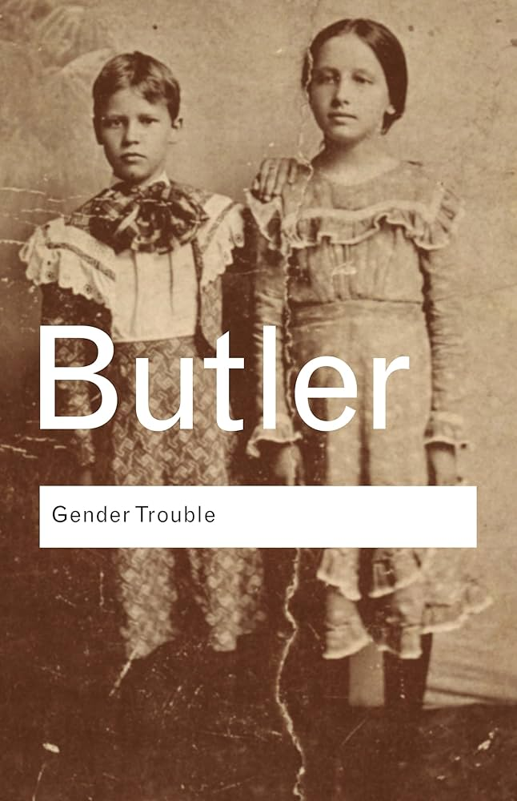
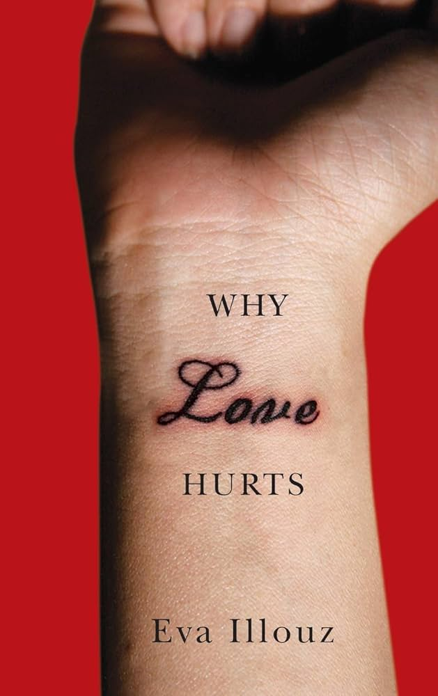

what a classifier’s feature weights reveal about how gender shapes the way people describe themselves.
overview
Online dating profiles are structured free-text self-descriptions generated under mild length and topic constraints, making them a reasonably controlled corpus for studying systematic variation in language use across demographic groups. This project uses the OkCupid 60k Profiles dataset (~60,000 anonymized Bay Area profiles, ~70% under 35, ~66% college-educated) to ask whether binary gender can be predicted from free-text self-description alone using interpretable linear models, and what the feature weights of a trained classifier reveal about the statistical structure of gendered language at scale.
Ten essay fields per profile are concatenated and normalized (lowercased, stripped to alphabetic characters), with identical preprocessing applied at training and inference to prevent transformation leakage. The core model is a binary Logistic Regression over a TF-IDF feature space, chosen over higher-capacity alternatives because coefficient magnitudes are directly interpretable as evidence weights, allowing the model itself to serve as a lexicon of gendered language. The TF-IDF vectorizer captures term importance relative to document frequency, surfacing gender-predictive vocabulary more reliably than raw counts. Male-predictive terms cluster around competence and autonomy (software, engineer, motorcycle); female-predictive terms around relationality and warmth (love, family, dancing). Both artifacts are serialized via joblib and loaded at runtime into a Flask/Gunicorn web interface, where users submit free text and receive class probabilities, with the live demo itself operationalizing the core finding. High accuracy on single-sentence inputs confirms gendered self-presentation is embedded at the level of word choice, not topic selection.
Two complementary analyses extend this result. NMF topic modeling (k=12) shows women overindex on “Warmth” and “Aesthetics” topics; men on “Outdoors” and “Entertainment.” NRC Lexicon emotion scoring finds women’s profiles average 6.5 emotional words versus 4.1 for men, a ~58% gap holding across all eight emotion subcategories. Together, these methods triangulate the same underlying pattern: gender shapes linguistic self-presentation in ways consistent, pervasive, and recoverable by a model with no inputs beyond text.
theoretical framework

gender trouble
judith butler
Gender as performance: the theoretical backbone for reading linguistic self-presentation as enactment, not essence.

why love hurts
eva illouz
How capitalism and market logic shape romantic life: key to reading dating platforms as structured emotional markets.
presentation
try the classifier
hosted on render’s free tier, so it may take ~50 seconds to wake up on first load.